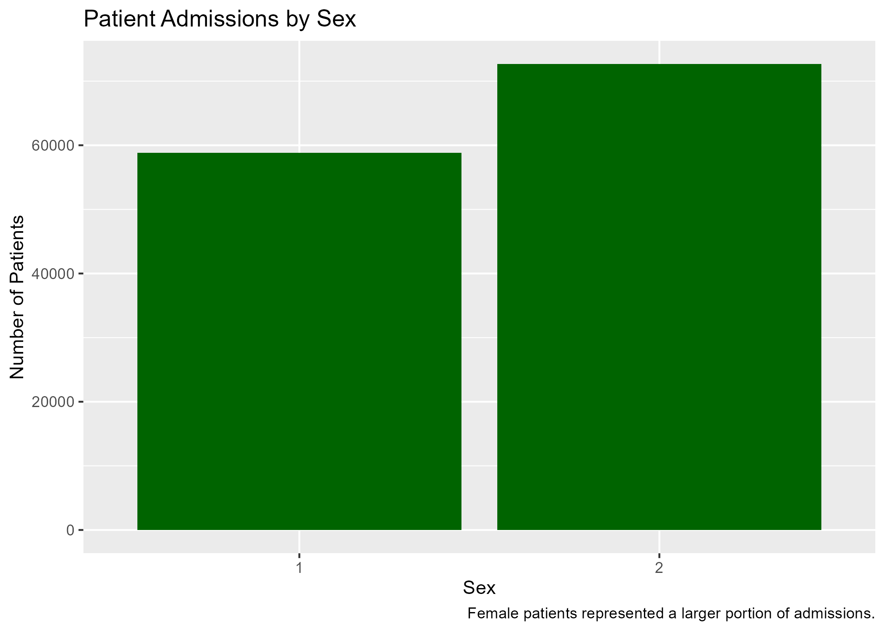
Analyzed hospital patient data
Created visualizations
Built Decision Tree & KNN Models
Variables Used:
Age
Sex
Race/Ethnicity
Provider
Admission Type
Campus
Length of Stay (LOS)
Total Charges (TOT)
Most patients were young children
Large concentration of ages of 0-5
Age distribution is not uniform across patients

Most patients were young children
Large concentration of ages of 0-5
Age distribution is not uniform across patients
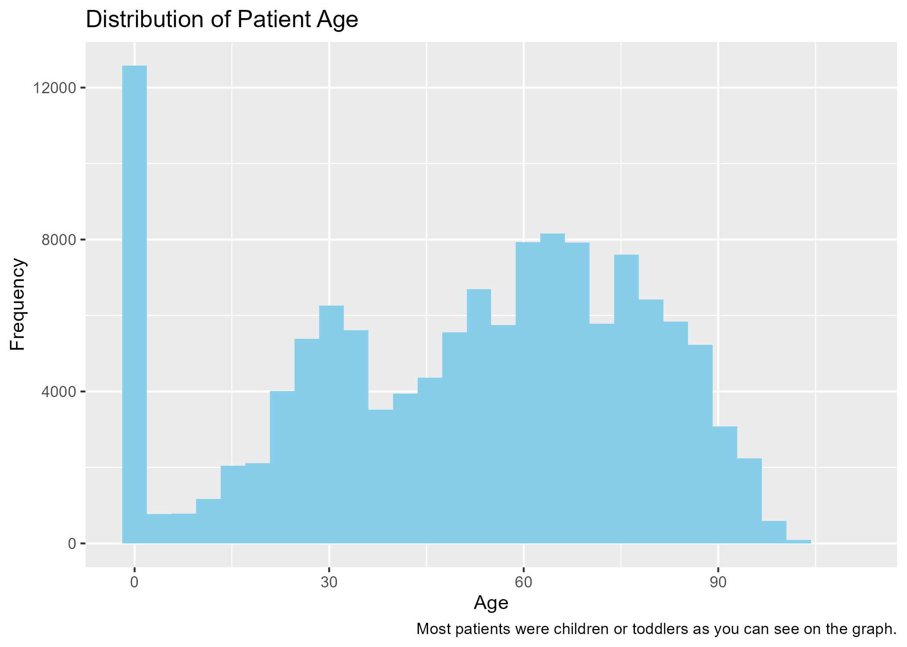
Patient age distribution remained consistent throughout the year
May and October had the highest admissions
February showed the lowest number of admissions (shortest month)
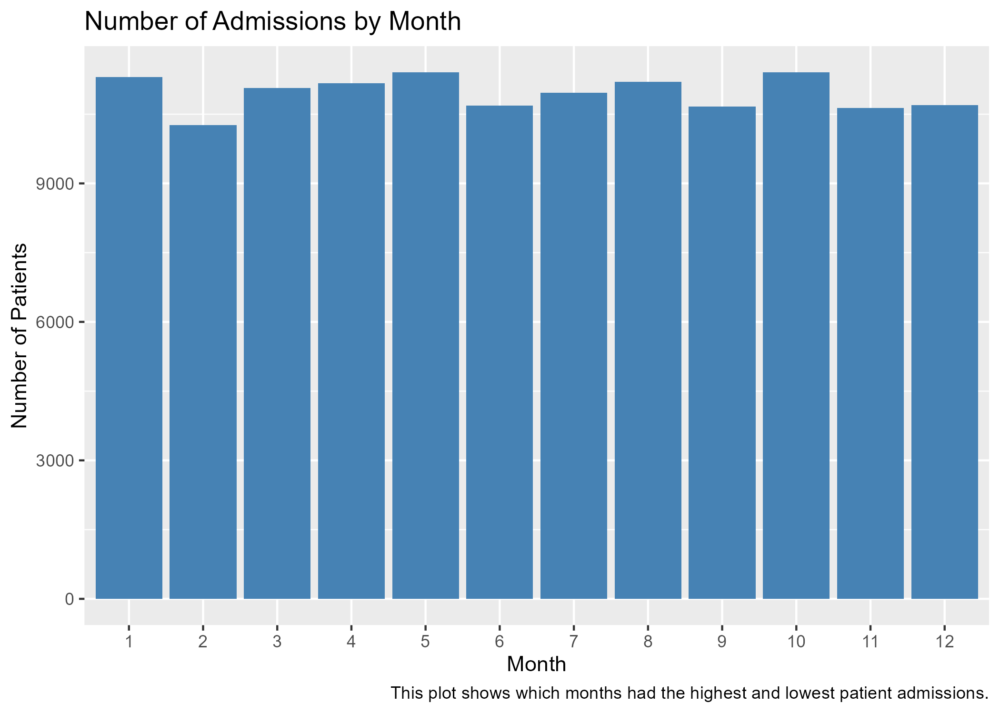
These patterns remain pretty consistent throughout the year
Actually interesting considering the winter months
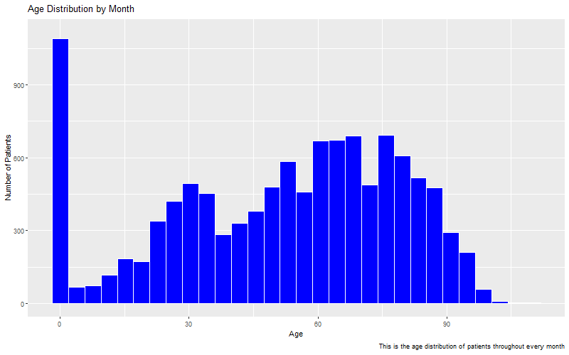
Most patients were age 0 or between 55-85
Females were more represented at ages 20-35
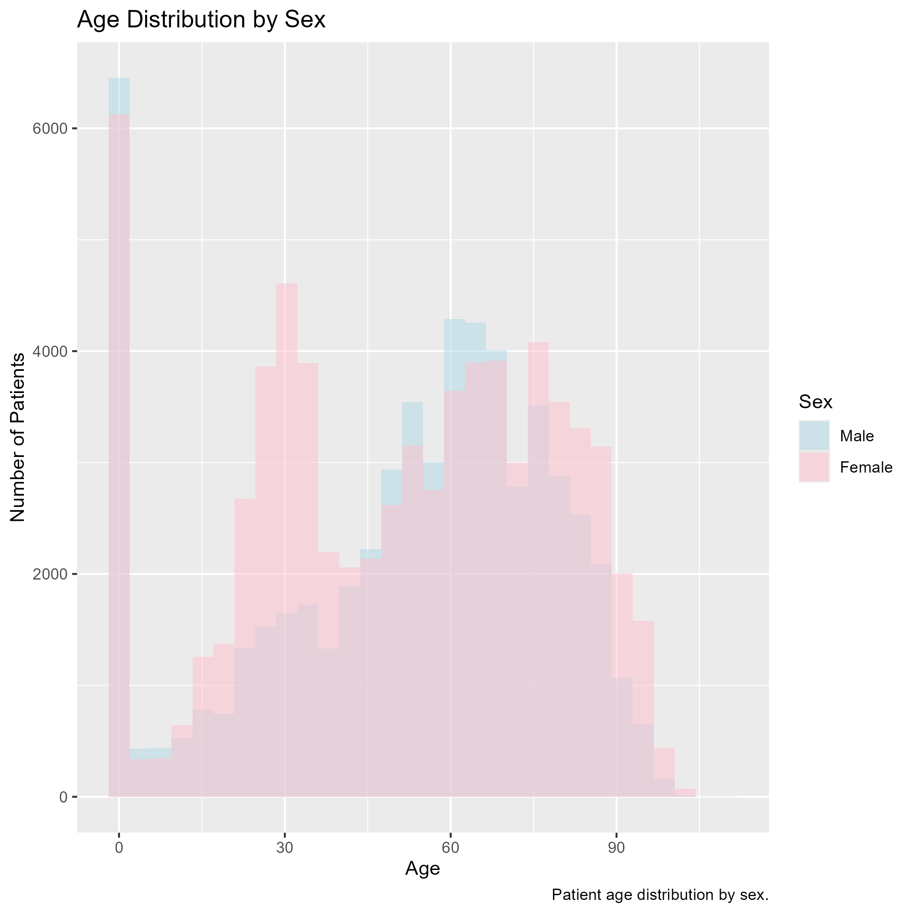
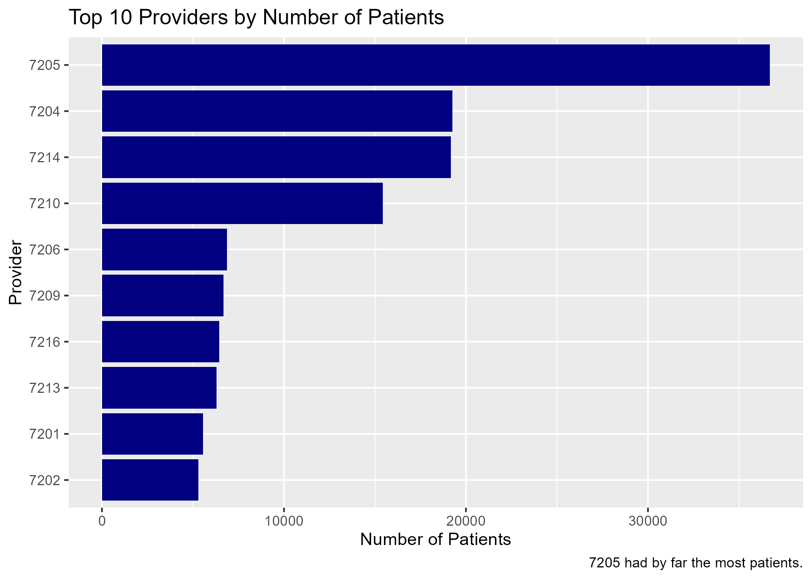
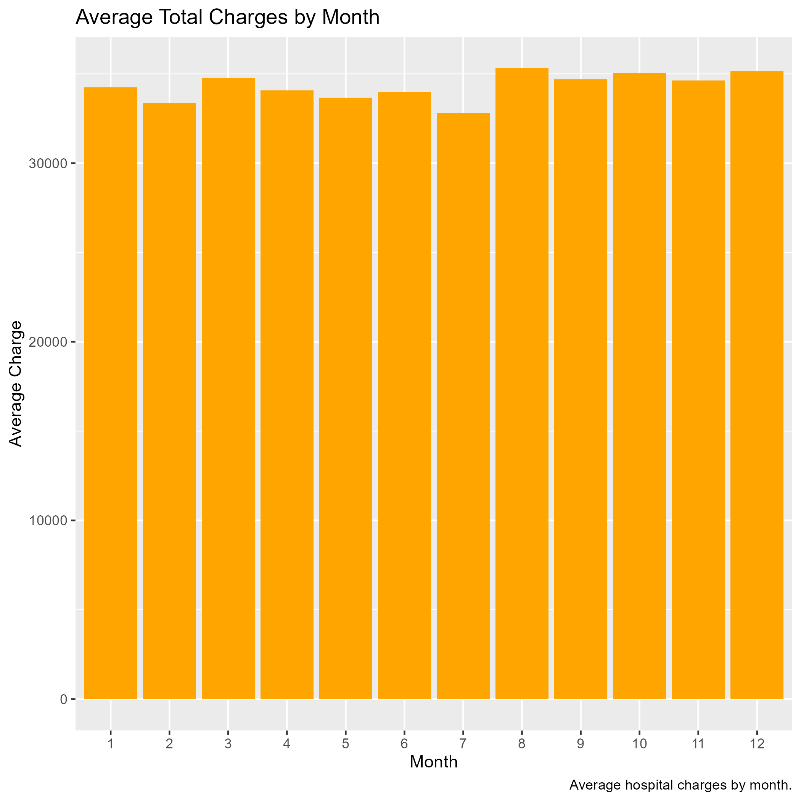
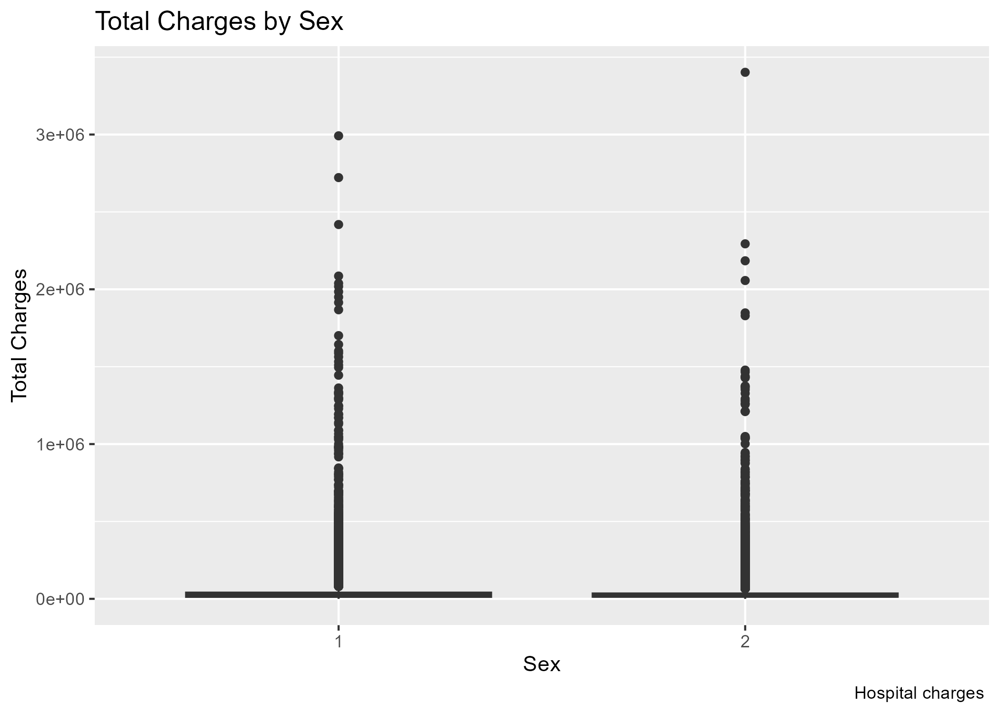
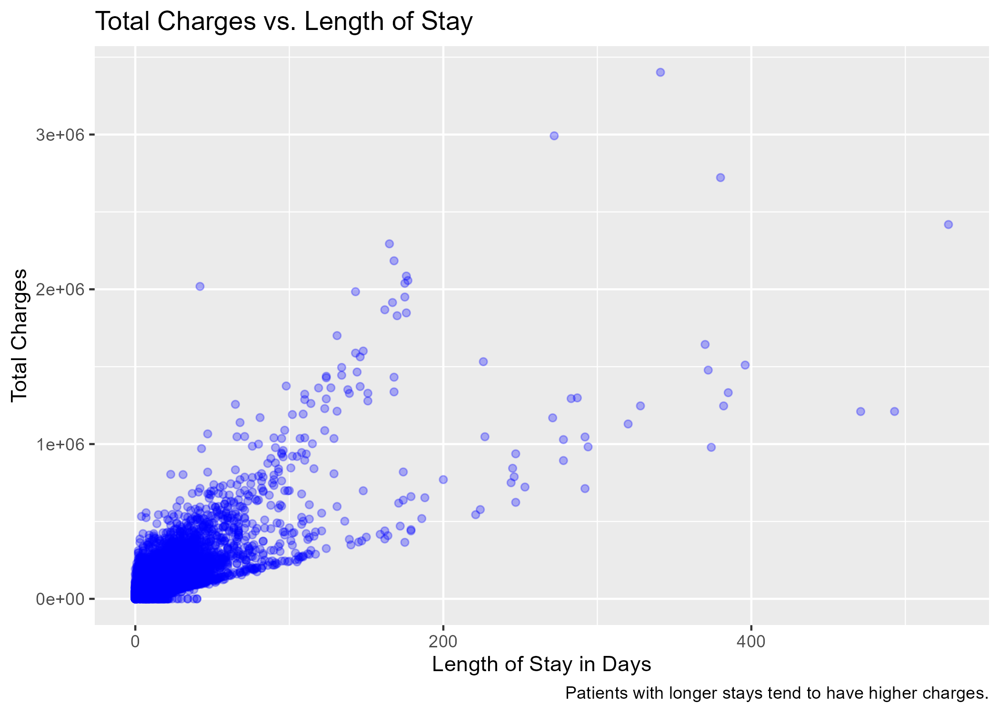
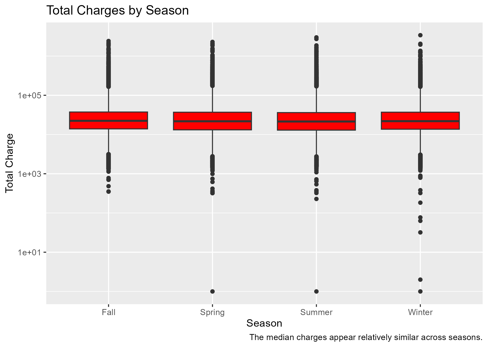
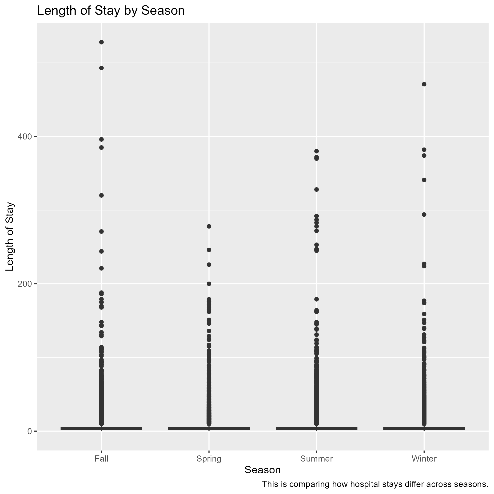
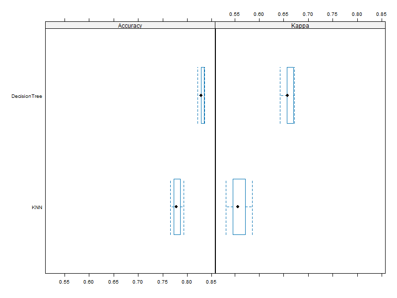
This is the Comparison model for question 4
Models Evaluated:
Results:
Decision Tree Accuracy: 81%
KNN Accuracy: 77%
The Decision Tree achieved the highest accuracy and was selected as the best model.
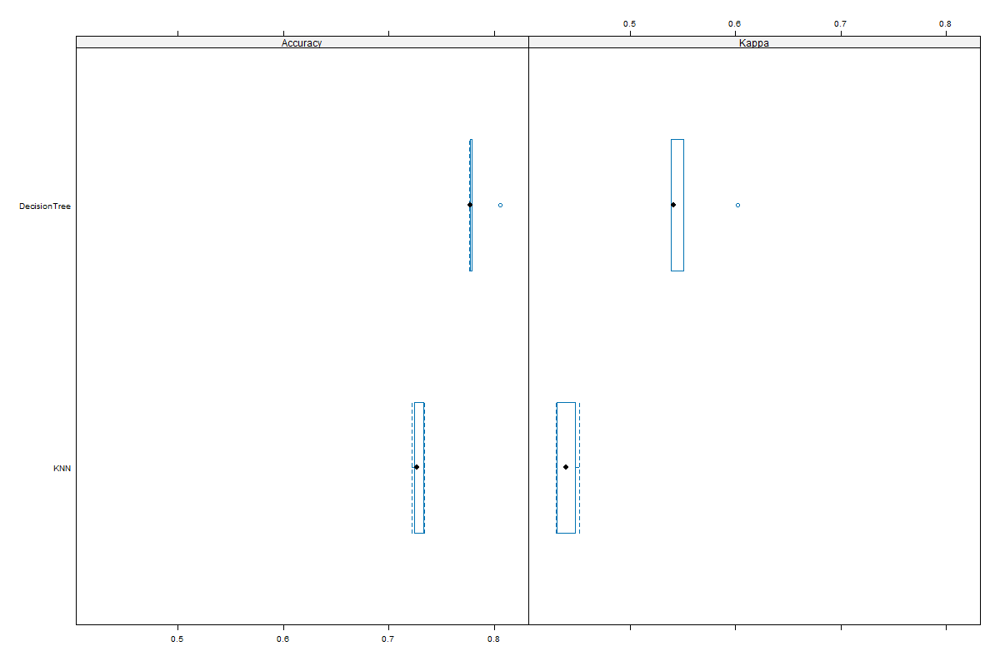
Data took a long time to load
Trying to fit the graphs onto the slides with the wording